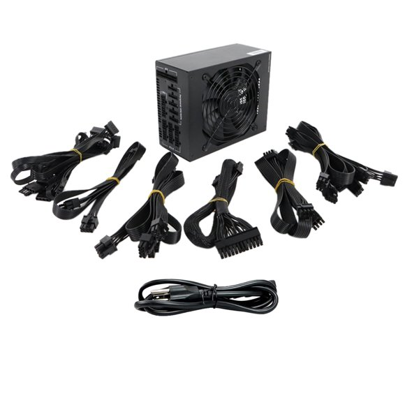
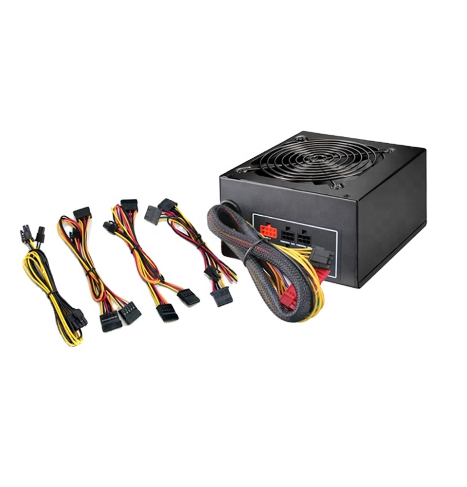
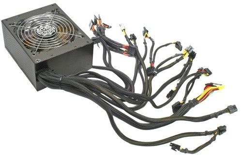
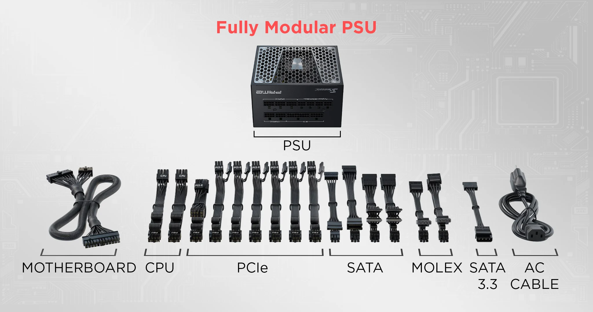

The Power Supply

Every single electronic device needs power. Your PC is no different. However, getting
power to your computer is a little more complicated than just plugging one thing into the wall,
and then bam, you’re done. Because a computer like this is a little more complex than a standard
desktop, you need one power source that goes into the wall, that then redistributes it all throughout
every part of the computer. The component that does this is called the power supply, or PSU.
When you buy a power supply, each one comes with a set of cables for each component. However, what sets different forms of PSUs apart is how those cables are attached. A power supply could either be fully modular, semi modular, or non modular. If a PSU is fully modular, it means that when you open up the box for the first time, all of the cables are going to be detached. So naturally, semi modular means that only a couple are pre attached, and non modular means that every cable is already attached. When a cable comes pre attached, it cannot be removed.
When you buy a power supply, each one comes with a set of cables for each component. However, what sets different forms of PSUs apart is how those cables are attached. A power supply could either be fully modular, semi modular, or non modular. If a PSU is fully modular, it means that when you open up the box for the first time, all of the cables are going to be detached. So naturally, semi modular means that only a couple are pre attached, and non modular means that every cable is already attached. When a cable comes pre attached, it cannot be removed.
Fully Modular

So why buy a fully modular power supply? The reason for this is because you’re not always going
to have as many parts as the power supply supports. For example, most power supplies come with 2
SATA cables for storage devices, but you might only be installing one hard drive. For this situation,
you wouldn’t want both cables pre-attached, because this would likely cause a lot of cable clutter
down the line, which can be confusing when trying to sort out what cable is going where.
Semi Modular

A semi modular power supply only has the motherboard and CPU cables pre-attached. This is never
an issue, since those cables are necessary 100% of the time. All other cables come separated from
the supply itself, and can easily be attached using a chart that is provided in the box. It is also
the most frequently bought variant.
Non Modular

A non modular (more often just called modular) power supply is a good buy for someone who has a big case and may not care about
a few excess cables here and there, because it won't cause any crowding issues. The other instance
that someone may need one is if they knew they would be needing every cable, whether it be the time
they build it, or in the foreseeable future. This option tends to be a little cheaper than the other
two, so if you feel like you’re someone who could have no problems with purchasing one, it’s a great
way to save a couple bucks.
Key For PSU Sockets

Frequently Asked Questions
| Q | A |
|---|---|
| How do I know what cable goes where in the model above? | Motherboard and CPU are self explanitory. PCIe cables are for the graphics card(s). SATA cables are for your storage devices that don't connect directly to the motherboard. Molex cables are for the case fans. A SATA 3.3 cable is a special storage cable that only some brands require. However, most do not. The AC cable is what connects your power supply into your wall, giving power to the whole system. |
| What is wattage? | Each power supply comes with a certain amount of watts, and the standard range is between 500 and 700. Anything over is usually overkill, and you never really have to worry about wattage to begin with. Most of the time, just make sure it's over 400 |
| What makes a PSU say "silver" or "gold" on the product? | If, for example, you're buying a power supply such as the "EVGA SuperNOVA 750 GT", which says it's an "80 Plus Gold", all it's saying that its a better version that its original. |
| What are some good brands to buy PSUs from? | Thermaltake, GAMEMAX, EVGA, Corsair, and Cooler Master are some of the more popular brands. That doesn't mean that all other brands are bad, because new companies come out with products every year. But those have been the most solid brands over the last few years. |
| What makes a socket inconvenient to reach? | Most commonly, this happens for the CPU socket, where it can sometimes be very close to the top of the case, and right under it will be the cooler, allowing little room to squeeze your hand through. This can be where a fully modular power supply comes in handy, because you’ll never have to worry about cables being a hassle to install. |